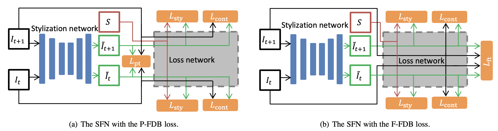
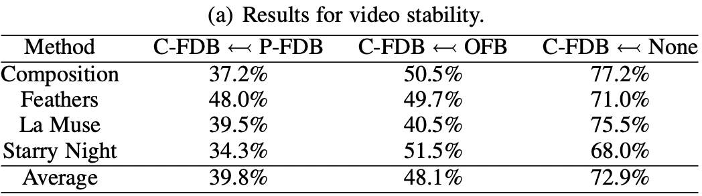
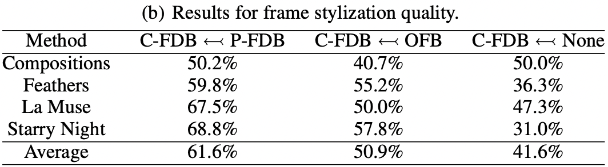

Paper and Supplementary Materials

Frame Difference-Based Temporal Loss for Video Stylization
Submitted to TPAMI.
(hosted on ArXiv)
[Bibtex]
| Jianjin Xu1,2 | Zheyang Xiong3 | Xiaolin Hu1 |
| 1Tsinghua University | 2Panzhihua University | 2Rice University |
| [Paper] |
[Code] |
|
Neural style transfer models have been used to stylize an ordinary video to specific styles. To ensure temporal inconsistency between the frames of the stylized video, a common approach is to estimate the optic flow of the pixels in the original video and make the generated pixels match the estimated optical flow. This is achieved by minimizing an optical flow-based (OFB) loss during model training. However, optical flow estimation is itself a challenging task, particularly in complex scenes. In addition, it incurs a high computational cost. We propose a much simpler temporal loss called the frame difference-based (FDB) loss to solve the temporal inconsistency problem. It is defined as the distance between the difference between the stylized frames and the difference between the original frames. The differences between the two frames are measured in both the pixel space and the feature space specified by the convolutional neural networks. A set of human behavior experiments involving 62 subjects with 25,600 votes showed that the performance of the proposed FDB loss matched that of the OFB loss. The performance was measured by subjective evaluation of stability and stylization quality of the generated videos on two typical video stylization models. The results suggest that the proposed FDB loss is a strong alternative to the commonly used OFB loss for video stylization. |
|
Jianjin Xu, Zheyang Xiong, Xiaolin Hu Frame Difference-Based Temporal Loss for Video Stylization Submitted to TPAMI. (hosted on ArXiv) [Bibtex] |
|  |
|
We propose a Frame Difference-Based (FDB) loss for stablizing stylized videos. The FDB loss is the distance between the difference of original frames and the difference of stylized frames. The difference is calculated in both pixel space and feature space. |
|   |
|
We evaluate the proposed FDB to the Optic Flow-Based (OFB) loss, which is the baseline. As the instability phenomena is subtle in pixel values, existing numeric metrics fail to discriminate the stablization ability of different algorithms, we resort to user study to evaluate the video stability and frame quality of our methods. We conduct two-alternative forced choice (2AFC) experiments on self-hosted behavior studies. The user study involved a total of 62 subjects and 25,600 votes. Results show that the proposed loss (C-FDB loss) is able to match the OFB loss in both frame quality and video stability. |
|
Video: demonstration of training a few-shot LSE. |
|
After annotating a few annotations, we obtain a competitve semantic segmentation model for GAN generated images. The few-shot LSEs further enables image editing applications. |
|
We propose two image editing applications: few-shot Semantic Image Editing and few-shot Semantic Conditional Sampling. Both applications are formulated as an optimization problem: find a latent vector that produces images satisfying given semantic constraints. For SIE, we optimize the initial latent vector to get close to the user-modified semantic mask. For SCS, we optimize several random latent vectors and return the closest one to the user-specific semantic mask. |

|
|
Figure: comparison of color-based editing, SIE using UNet (baseline), SIE using 8-shot LSE (ours), and SIE using fully trained LSE. |
|
Semantic Image Editing. In many cases, the user may want to control a GAN’s image generation process. For example, they might want to adjust the hair color of a generated facial image from blond to red; and the user may draw a red stroke on the hair to easily specify their intent. However, without explicit notion of semantics, the minimization process may not respect image semantics, leading to undesired changes of shapes and textures. Leveraging LSE, we propose an approached called Semantic Image Editing (SIE) to enable semantic-aware image generation. Our method can edit the images better than the baseline, SIE(UNet). More results are shown in the video below. |
Acknowledgements |